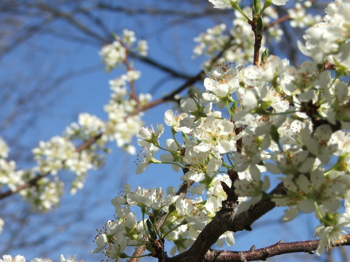
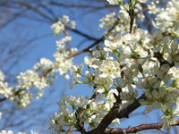
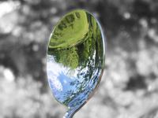
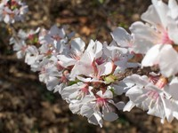

Next Photo
-
Vote
Warm White Flowers in the Sky
This photo is about warmth. The primary subject is the flowers in focus, which provide nice contrast against the secondary subject of the branch of floers out of focus. The primary branch is darker than the fuzzy one, which has the warmth of the sun shining on it. The white contrasts the blue of the sky, which contrasts the red seen in the branches of the tree.
More...
Title: Warm White Flowers in the Sky
Description: This photo is about warmth. The primary subject is the flowers in focus, which provide nice contrast against the secondary subject of the branch of floers out of focus. The primary branch is darker than the fuzzy one, which has the warmth of the sun shining on it. The white contrasts the blue of the sky, which contrasts the red seen in the branches of the tree.
Keywords: warmth white flower blue sky red spring
Hidden: n
Date added: Mon Apr 03 18:31:02 CDT 2006
Date taken: Mon Apr 03 14:56:40 CDT 2006
Camera: FUJIFILM.FinePix S5100 .
Resolution: 2272x1704
Mode:
Shutter speed: 907/100
Flash: 16
Exposure time: 10/5000
Iso: 100
Metering: 5
Aperture: 500/100
Focal length: 1720/100
Artist: NathanielGuy Mahieu
Copyright: 2006 NathanielGuy Mahieu
Views: 4704


